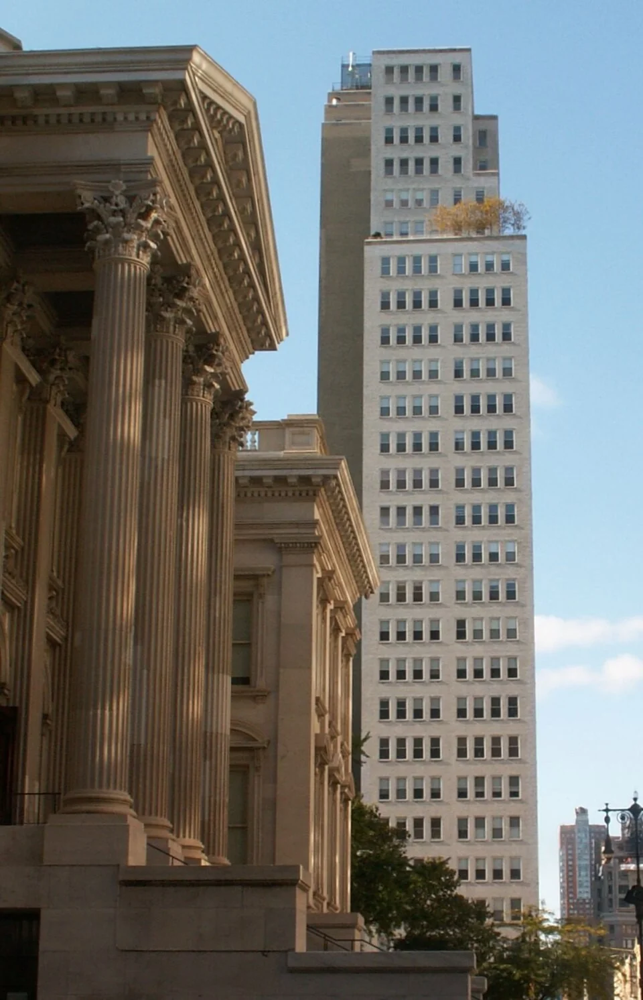
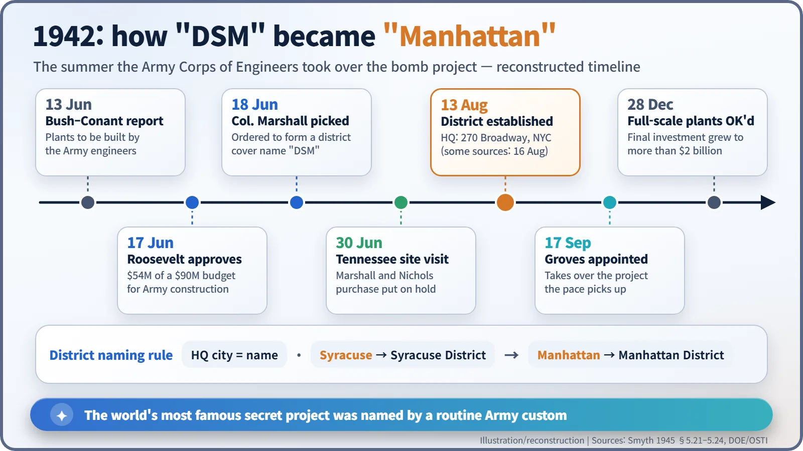
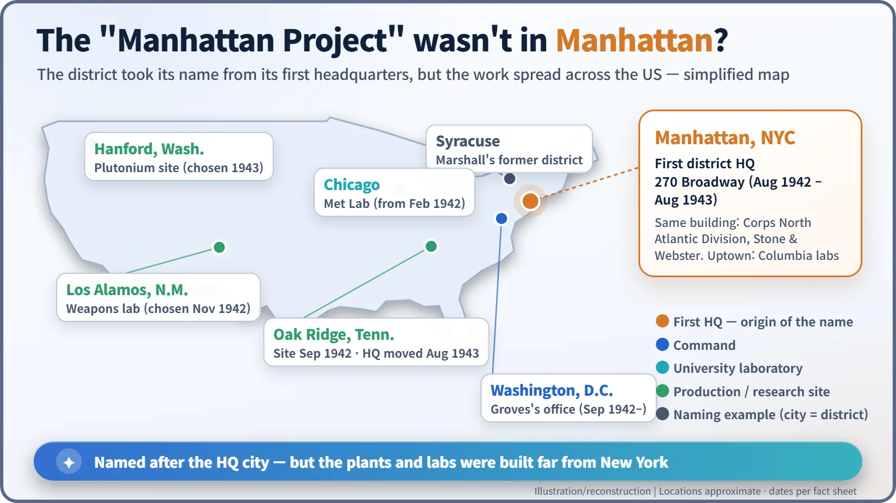
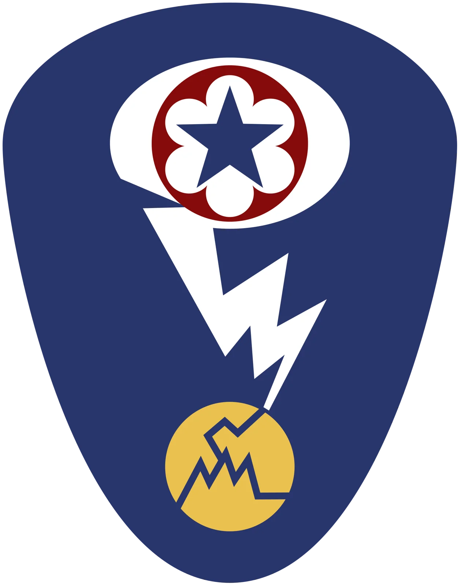

Nuclear History · 087
It Could Have Been the "Washington Project" — Why the Manhattan Engineer District Was Named Manhattan (1942)
A cover name that drew attention, an old Army habit of naming districts after their headquarters city, and an office at 270 Broadway gave the world's most famous secret project its name.
In June 1942 the U.S. Army Corps of Engineers took over the job of building the atomic bomb plants, and Colonel James C. Marshall was told to organize a special engineer district. Its first cover name, "DSM", seemed to give too much away, so the district was named the way Army districts usually were: after its headquarters city. On 13 August 1942 the Manhattan Engineer District was born at 270 Broadway, New York.
A colonel who preferred New York
In the summer of 1942 an Army colonel decided he would rather not work in Washington "if I can avoid it," and set up shop in New York instead. Had he changed his mind, we might be talking today about the "Washington Project." The most famous name in the history of secret science came from a surprisingly ordinary piece of Army routine. [5]

From the scientists to the engineers
Until the spring of 1942 the American atomic bomb effort was run by scientists in university laboratories. The next step, though, was not another experiment. It was building factories the size of small towns: buying land, hiring workers by the thousand and getting hold of steel and copper in the middle of a war. The organization best at that kind of job was the U.S. Army Corps of Engineers, which had been building bases and dams for decades. The Department of Energy's official history calls the Corps "the logical choice." [2]
On 13 June 1942, Vannevar Bush and James B. Conant sent up a plan for the next phase, and President Franklin D. Roosevelt approved it on 17 June. Of the proposed fiscal 1943 budget of $90 million, $54 million went to the Corps of Engineers for construction. The scientists' committee kept university research and pilot-plant studies. [1] [2]
The colonel who could not sleep
The next day, 18 June, the Army's Chief of Engineers told Colonel James C. Marshall (1897–1977), then head of the Syracuse Engineer District in upstate New York, to organize a new district for this special work. An engineer district is simply the Corps' administrative unit for running construction in a region. [1]
Marshall later recalled reading the secret file in Washington and hardly sleeping that night, the papers tucked under his pillow because he did not trust the hotel safe. A civil engineer by training, he was also suspicious of the numbers. As he remembered it, the plan said all four methods of making bomb material could be developed for "an estimated cost in the neighborhood of $90,000,000." He doubted it. He was right: the government's final investment would exceed $2 billion. [5] [4]
Marshall brought in Lieutenant Colonel Kenneth D. Nichols (1907–2000) as his deputy, and on 30 June the two inspected a promising site in Tennessee. But Marshall held off buying the land until reactor experiments gave clearer answers, and the project's priority for scarce materials stayed stuck at AA-3, the same rating as a TNT plant Nichols had built in Pennsylvania. That slow start would soon bring in a new man at the top. [3]
"DSM": a cover name that drew attention
The first cover name was the "Laboratory for the Development of Substitute Materials," or DSM. Colonel Leslie R. Groves, then deputy chief of Army construction, thought it gave away too much about what it was meant to hide, and would attract exactly the attention it was supposed to avoid. [6]
The fix came from an old Corps habit: engineer districts were normally named after the city where their headquarters sat. Marshall's previous command was the Syracuse District, for example. The new organization's headquarters were at 270 Broadway in Lower Manhattan, a federal office building that also housed the Corps' North Atlantic Division. So the new unit became the Manhattan Engineer District (MED), a name that would look unremarkable on any list of Army districts. [6]
On 11 August Marshall proposed the new district to Groves. With the approval of the Chief of Engineers, Eugene Reybold, the Manhattan District was officially established on 13 August 1942. (A few sources give 16 August, but the 1945 official government report by Henry DeWolf Smyth and the Department of Energy both give 13 August.) Unlike an ordinary district, it had no territorial boundaries. It was named after Manhattan, but its work spread across the whole country from the start. [1] [3]
Marshall's own memory adds a lighter touch. In a 1965 interview he said that when people asked what to call the district, he first joked, "Well, let's call it the DSM District, and that means Distinguished Service Medal." Later he suggested something simpler: "Why not call it the Manhattan District? I'm in Manhattan." This is a story told 23 years after the fact and should be read as a recollection, not a record. But it agrees with the official account on the key point: the name came from where the headquarters was. [5]

Why New York?
New York had practical advantages. The engineering firm Stone & Webster, which would design and build plants for the project, had offices in the same building, and uptown at Columbia University important uranium research was already under way. So it is not true that nothing happened in Manhattan. Still, the headquarters stayed only a year: in August 1943 it moved to Oak Ridge, Tennessee, and Marshall left for an overseas posting on 13 August 1943, exactly one year after the district was born. [6]

The name outlived the district
On 17 September 1942, Groves was given command of the whole project, and the pace changed completely. On 28 December, Roosevelt approved full-scale production plants. One thing is worth remembering: "Manhattan Project" was always the popular name. The official organization was the Manhattan Engineer District to the end. On 1 January 1947 the new civilian Atomic Energy Commission took over its work, and the district was formally abolished on 15 August 1947. [1] [4]

A name picked precisely because it was dull became one of the best-known names of the twentieth century. A filing convention ended up on the cover of the history books.